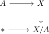
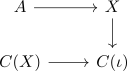

n-connected pair of spaces and relative homotopy
Proposition
Let $(X,A)$ be an \(n\)-connected topological space, where $A$ is \(p\)-connected. Then the map
\begin{align*}
\pi_l(X,A) \rightarrow \pi_l(X/A, [A])
\end{align*}
for the
is
- an isomorphism for $l \leq n + p -1$
- an epimorphism for $l = n + p$
Proof
using the CW approximation of a pair and quotient of a cw pair as cw complex, consider the pushout

resp. the

where $X/A \simeq C(\iota)$ are homotopy equivalent (cf. map from the mapping cone of a cofibration to the collapse as homotopy equivalence)
Here $A \rightarrow C(X) \simeq * $ is $p+1$ connected (cf. connected space and connectivity of the terminal morphism) and by homotopy excision theorem for CW complexes we conclude that the induced map
\begin{align*}
\mathrm{hofib}(A \rightarrow X) \rightarrow \mathrm{hofib}(* \rightarrow C(\iota)) \simeq \Omega(C(\iota)) \simeq \Omega(X/A)
\end{align*}
is $d + p + 1 - 1 = d + p$ connected map (cf. homotopy fiber as loop space, loop space functor as homotopy invariant functor todo)